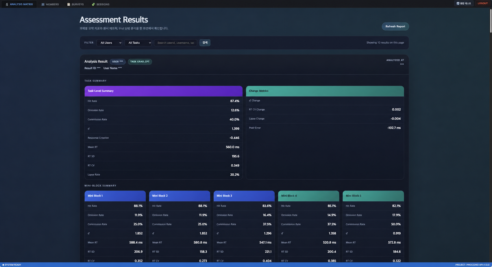

전문성과 아이디어는 있지만 제품 형태가 불명확할 때
서로 다른 문제 정의와 기술 선택을 팀이 검증할 하나의 제품 가설로 정리합니다.
Identity-OS / Product Systems Engineer
복잡한 도메인·데이터·AI 아이디어를 가진 초기 팀에서, 무엇을 만들지 함께 정리하고 제품·데이터·배포를 연결합니다. 먼저 볼 수 있게 만들고, 검증 이후에도 바뀔 수 있는 시스템으로 남깁니다.
저는 정해진 요구사항만 구현하기보다, 창업자와 도메인 전문가가 가진 문제를 함께 정리하고 팀이 판단할 수 있는 첫 제품을 만드는 엔지니어입니다.
의료, 제조, 공공, AI/데이터, B2C처럼 해석이 필요한 도메인에서 사용자가 만나는 경험과 그 뒤의 데이터·백엔드·배포 구조를 함께 다뤄왔습니다.
AI로 구현과 반복의 속도를 높이되, 무엇을 왜 만들지와 어디까지 검증할지, 어떻게 운영으로 이어갈지에 대한 판단은 직접 책임지는 것을 중요하게 생각합니다.
서로 다른 문제 정의와 기술 선택을 팀이 검증할 하나의 제품 가설로 정리합니다.
사용자 경험, 데이터, API와 배포 흐름을 연결해 실제로 작동하는 기준점을 만듭니다.
빠른 검증의 결과가 일회성 데모에 머물지 않도록 운영과 변경이 가능한 구조를 남깁니다.
좋은 아이디어가 있어도 팀의 문제 정의가 다르면 구현은 학습으로 이어지지 않습니다. 먼저 검증할 가설과 첫 제품의 범위를 맞춥니다.
의료, 제조, 공공, AI/데이터 프로젝트에는 각자의 언어와 제약이 있습니다. 중요한 것은 그 언어를 사용자가 이해하고 활용할 수 있는 제품 구조로 바꾸는 일입니다.
모든 요구사항이 완성될 때까지 기다리면 의사결정은 늦어집니다. 먼저 볼 수 있는 형태를 만들고, 이후 변경을 막지 않도록 바뀔 수 있는 여지를 함께 남겨야 합니다.
세 장면을 구현해온 기술 범위
React · TypeScript · Kotlin · Spring Boot
Elixir · Python · SQL · Machbase · FastAPI
Docker · Kubernetes · AWS · NCP · CI/CD
Proves
아이디어가 실제 서비스로 작동하기까지 사용자 경험, 백엔드, 배포 흐름을 함께 연결한 Evidence.
Proves
의료 도메인의 역할, 리포트, 운영 흐름을 사용 가능한 제품 구조로 옮긴 Evidence.
Proves
불확실한 AI 최적화 아이디어를 먼저 검증 가능한 MVP로 만들고, 반복 가능한 SaaS 구조로 발전시킨 Evidence.
Proves
레거시 DB, 시계열 데이터, 대용량 그래프 성능 제약을 실제 사용자가 볼 수 있는 모니터링 구조로 옮긴 Evidence.
Proves
인지 선별 데이터를 수집, 분석 결과, 관리자 화면으로 연결하는 백엔드 흐름을 구성한 Evidence.

What I did
공정에서 쌓이는 두께 데이터를, 현장이 실제로 판단할 수 있는 화면으로 바꾸는 일이었다.
인지 선별의 원천 응답이 분석을 거쳐 운영자가 확인하는 결과로 남아야 했다.
불확실한 최적화 아이디어를 먼저 볼 수 있게 만들고, 반복 가능한 SaaS 구조로 키우는 과정이었다.
이미 서비스 중인 제품을, 이후의 기능과 운영을 감당할 수 있는 구조로 다시 정리해야 했다.
의료진, 관리자, 파트너, 사용자처럼 서로 다른 역할이 같은 운영 흐름 안에서 만나야 했다.
다국어 런타임, 성능, 정적 배포
보안 계층, 감사 로그, CI/CD
공공 데이터 통합과 최적화
FHIR, 의료 데이터, Kubernetes
제조 데이터와 A/B 테스트
의료 연구 데이터 검토 도구
모바일 제품, 위치 데이터, 예측 알고리즘
Product Operations
어드민의 복잡도는 UI보다, 운영자가 끝내야 할 업무와 데이터의 기준이 충분히 공유되지 않은 상태에서 시작되는 경우가 많았습니다.
Product Decision
화면이 생기면 일정, 디자인과 데이터 구조를 같은 기준에서 이야기할 수 있습니다. 완성된 UI보다 먼저 필요한 것은 어떤 결정을 위해 무엇을 보여줄지 정하는 일입니다.